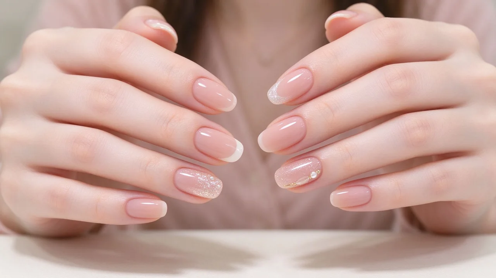
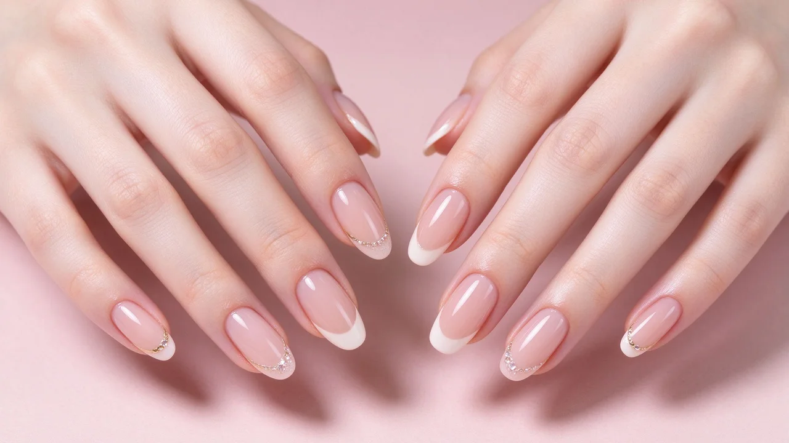
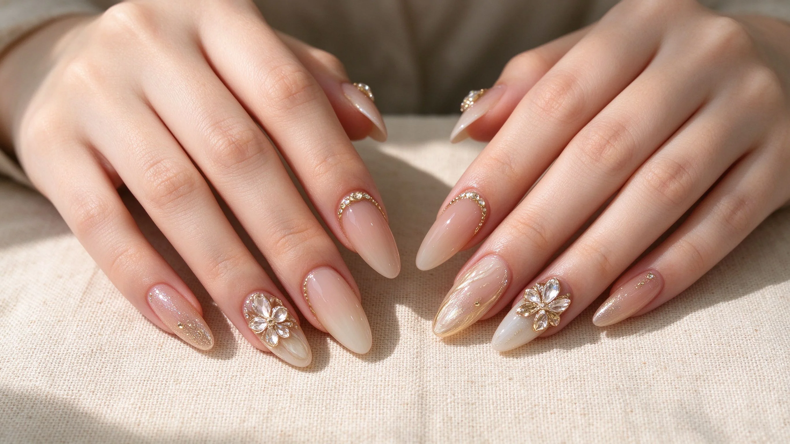
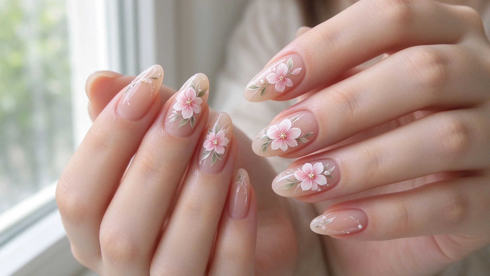
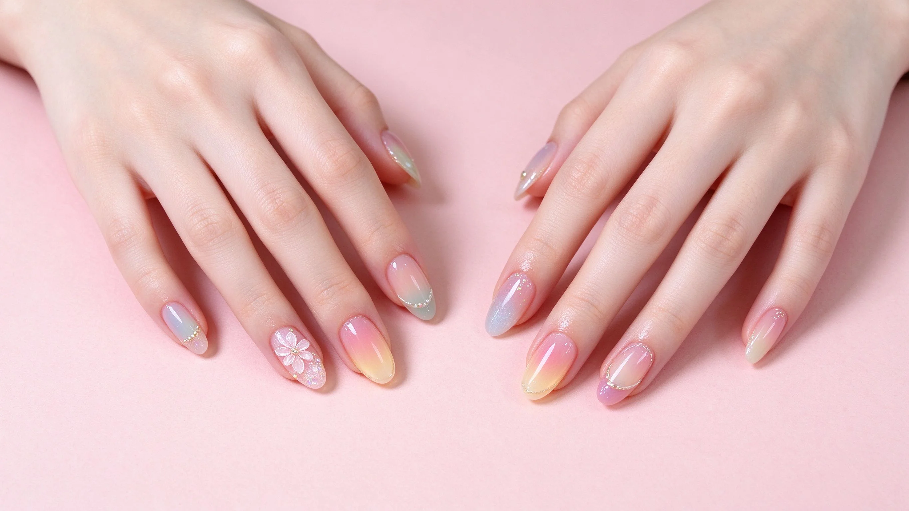
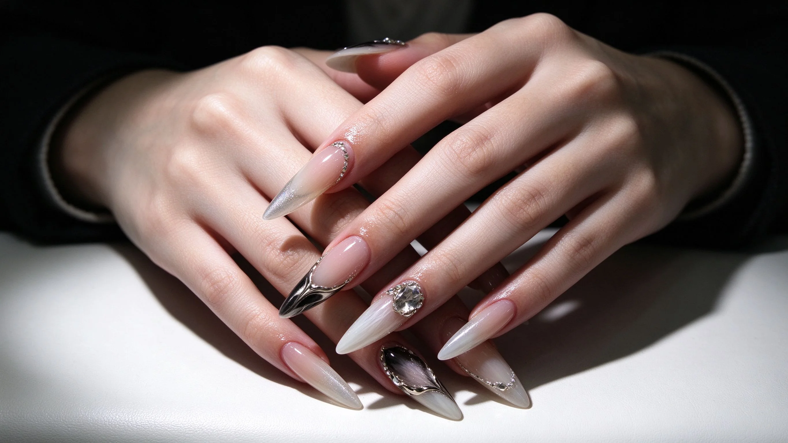
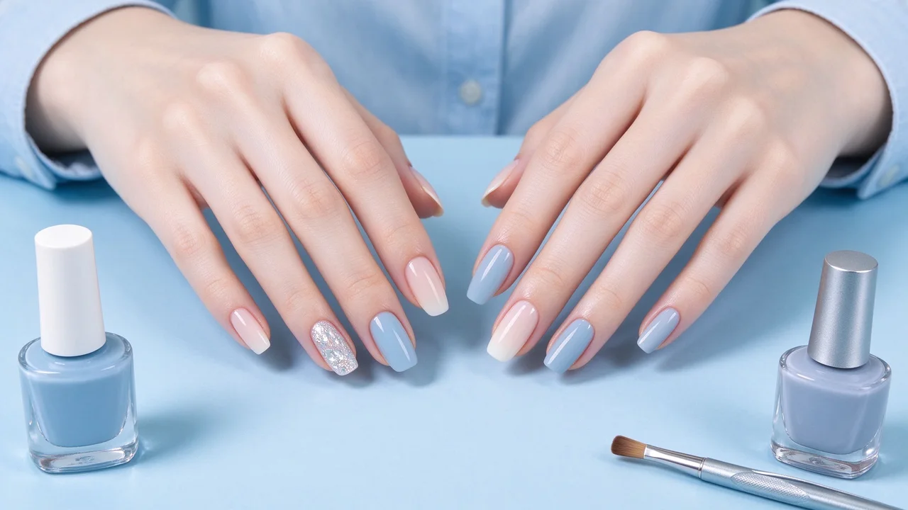
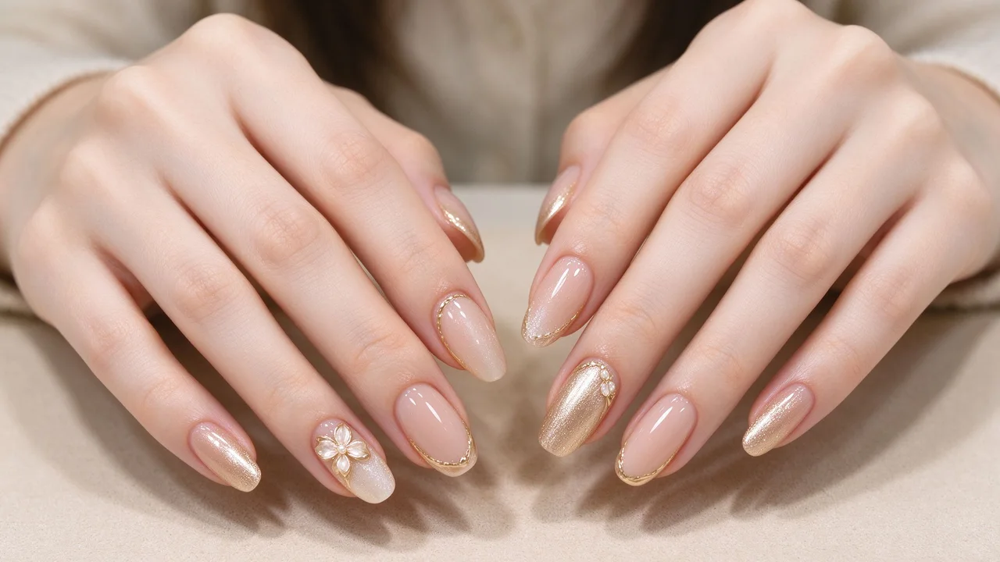

NAILPUT · 美甲學院
NailPut 美甲知識庫，了解你手指上的藝術
最齊全的大白話美甲知識庫：原理、做法步驟、優缺點、新手雷區










LED燈vsUV燈比較：美甲光療燈怎麼選LED燈vsUV燈比較：美甲光療燈怎麼選是美甲裡「買燈比較」的一種做法，靠「LED快但挑膠」一眼認得出；它是通用流派的常見技巧，適合中階階段學習。硬膠vs軟膠差別：延甲凝膠選購指南硬膠vs軟膠差別：延甲凝膠選購指南是美甲裡「延甲比較」的一種做法，靠「硬膠撐力強」一眼認得出；它是通用流派的常見技巧，適合中階階段學習。延甲vs甲片比較：指甲延長方式怎麼選延甲vs甲片比較：指甲延長方式怎麼選是美甲裡「延長方式」的一種做法，靠「延甲一體」一眼認得出；它是通用流派的常見技巧，適合入門階段學習。美甲做法怎麼選？依生活型態挑款式美甲做法怎麼選？依生活型態挑款式是美甲裡「挑對款式」的一種做法，靠「常做事要耐磨」一眼認得出；它是通用流派的常見技巧，適合入門階段學習。薄甲易斷怎麼辦？依甲況選美甲做法薄甲易斷怎麼辦？依甲況選美甲做法是美甲裡「特殊甲況」的一種做法，靠「薄甲用軟膠」一眼認得出；它是通用流派的常見技巧，適合中階階段學習。日系韓系歐美美甲差異：依風格選款式日系韓系歐美美甲差異：依風格選款式是美甲裡「選款式」的一種做法，靠「要精緻選日系」一眼認得出；它是通用流派的常見技巧，適合入門階段學習。